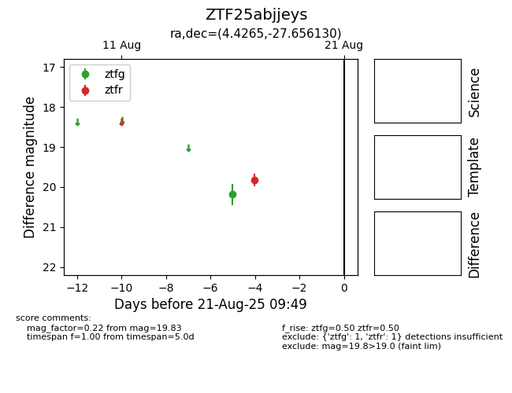

Target ZTF25abjjeys at 2025-08-21 09:49, see:
FINK: fink-portal.org/ZTF25abjjeys
Lasair: lasair-ztf.lsst.ac.uk/objects/ZTF25abjjeys
ALeRCE: alerce.online/object/ZTF25abjjeys
alt names
ZTF25abjjeys (ztf,alerce)
coordinates:
equatorial (ra, dec) = (4.4265,-27.65613)
galactic (l, b) = (26.9637,-82.49545)
photometry
last ztfg=20.18, ztfr=19.83
1 ztfg, 1 ztfr detections
